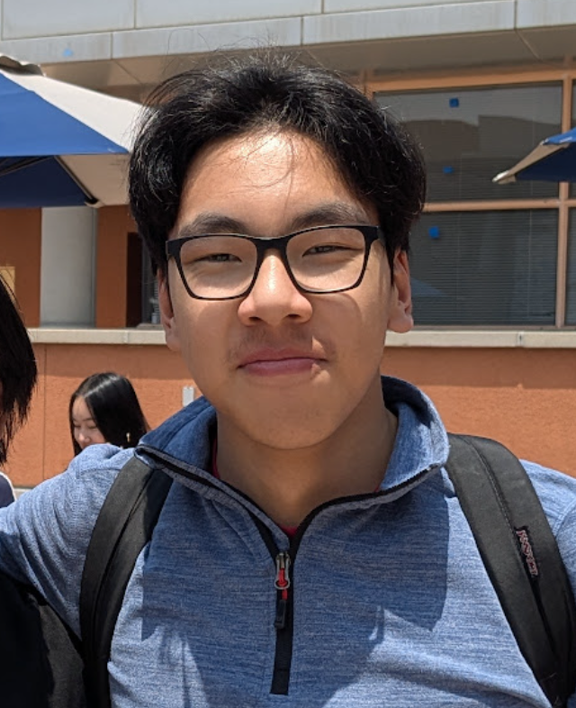

My Resume
Tianyu (Jason) Shao

Objective
Friendly, reliable student with strong communication and multitasking skills. Experienced in serving diverse communities through tutoring and volunteer work. Eager to bring a positive attitude and strong work ethic to a collaborative tutoring environment.
Education
Gabrielino High School: 2022-Present
- Weighted GPA: 4.76; Class Rank: 2; SAT: 1530
- Relevant Coursework: AP Calculus AB & BC, AP Chemistry/Biology/Physics/Env. Sci
Experience/Volunteering/Leadership
Student Tutor (CJSF) - Volunteer Organization: 2021-2023
- Tutored middle school students in mathematics, science, and English
- Built relationships with students through clear, patient communication
- Adapted explanations to individual learning styles
Key Club: 2022-Present
- As junior officer (2023-2024):
- Oversaw community service events as an Officer-in-Charge, managing member check-ins and attendance
- As president (2024-2025):
- Collaborated with external partners to coordinate volunteers for over 20 service events
- Directed monthly general and board meetings, setting agendas and guiding discussions
- Raised $450+ through fundraisers by leading outreach and planning efforts
- Maintained ongoing communication with Kiwanis advisors, Division leaders, and school staff
Science Olympiad: 2022-Present
- As treasurer (2023-2024), raised funding to fully cover Rio Hondo Regionals 2024 competition fees
- As vice president (2024-2025), scheduled and facilitated study sessions to enhance team performance and preparation
Math Club: 2022-Present
- As secretary (2023-2024), recorded meeting notes and assisted in coordinating club events and activities
- As vice president (2024-2025), led the Gabrielino math team in placing in the Mu Alpha Theta Rocket City Math League
Skills
- Strong communication & collaborative skills
- Fast learner, adaptable to a variety of roles
- Fluent in Mandarin Chinese and English; Spanish level 3
Awards, Honors, Certifications
- Honors: Math Department Award 2023, Science Department Award 2024, Math/English Department Awards 2025
- Awards: Cross-Country, Track & Field Scholar Athlete 2023, 2024, 2025
Auxillary Information
Get to know me!